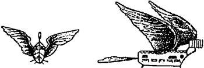
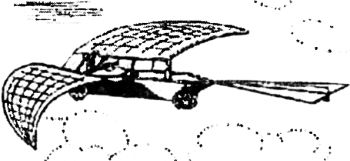
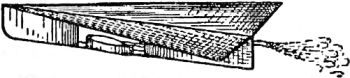

Аэропланы с ракетными двигателями
Так же как и в описанной выше ситуации с аэростатами, инициативные конструкторы примеряли принцип реактивного движения к самым разнообразным проектам летательных аппаратов, коих к концу XX века имелось уже в изобилии. Не обошли вниманием и аэроплан.
Разумеется, никто в те времена не предполагал использовать аэропланы для полетов в космическое пространство, однако сама идея впоследствии побудила того же Циолковского к анализу проблемы, что и позволило появиться на свет целой серии ракетопланов, первоначально нацеленных в мезосферу и еще выше — в космос.
Собственно, авторство первого известного проекта крылатого летательного аппарата с реактивным двигателем принадлежит французскому изобретателю Жерару, который в своей книге «Очерк искусственного полета в воздухе» (1784 год) предложил построить орнитоптер с громадными крыльями, приводимый в движение пороховыми ракетами. Спереди орнитоптера размещался вертикальный руль, а сзади — горизонтальный.
В 1837 году в Германии был опубликован проект реактивного самолета, авторство которого долгое время приписывалось нюренбергскому механику Ребенштейну. На самом же деле под этим псевдонимом выступал немецкий электротехник Вернер фон Сименс, впоследствии основавший известную фирму «Siemens». В качестве источника движущей силы для изобретенного им аэроплана Сименс предлагал использовать или реактивное действие водяных паров, или сжатого углекислого газа.
Через тридцать лет, в 1867 году, англичане Бутлер и Эдвардс взяли патент на проект реактивного аэроплана, форма которого походила на стрелу. Двигатель предполагался паровой, что, с учетом реалий того времени, вполне обоснованно.



В том же году некто капитан Николай Телешев взял во Франции патент на проект реактивного самолета. Судя по описанию, содержащемуся в патентной заявке, самолет Телешева представлял собой реактивный летательный аппарат тяжелее воздуха и приводился в движение за счет отдачи газов, образующихся при взрыве смеси в полом цилиндре, который служил камерой сгорания. В качестве горючего использовалась неназванная взрывчатая смесь, в качестве окислителя — атмосферный кислород.
Еще через двадцать лет в Киеве вышла в свет брошюра инженера Федора Гешвенда «Общее основание устройства воздухоплавательного парохода (паролета)», в которой автор развивал идею применения реактивной работы пара в транспорте. В брошюре был приведен чертеж аэроплана в трех проекциях и расчет. На основании этих расчетов Геш-венд получил следующие технические характеристики «паролета»: скорость при взлете — 1010 км/ч, подъемная сила — 1,33 тонны, расход пара — 213 кг/ч. Перелет из Киева в Петербург с пятью промежуточными посадками по 10 минут должен совершаться за 6 часов. При наличии конденсатора расход воды можно снизить до 107 кг/ч. Запас топлива (керосин) на один час полета составляет 16,4 килограмма. В аппарате помещаются 3 пассажира и 1 машинист. Для управления служат руль и поворотная воронка пароструйного аппарата. Двигатель — реактивный паровой, причем пар, покидая котел по системе труб, подается в ряд инжекторных сопел и, увлекая за собой большую массу воздуха, вырывается из последней — седьмой воронки. Вес аппарата с запасом воды и топлива — 1,14 тонны. Стоимость — 1400 рублей.
Как видите, несмотря на определенное предубеждение, существовавшее в XIX веке по отношению к летательным аппаратам тяжелее воздуха, проекты аэропланов на реактивной тяге появлялись достаточно регулярно. Однако идея настоящего ракетоплана стала обсуждаться несколько позже — уже после того, как в 1903 году американцы Орвилл и Уилбер Райт совершили первый полет на своем биплане с четырехцилиндровым бензиновым двигателем.
В 1908 году французский изобретатель Рене Лорэн опубликовал в авиационном журнале «Аэрофил» несколько статей о проекте реактивного самолета, приводящегося в движение однорядным шестицилиндровым двигателем внутреннего сгорания.
Гондола этого аппарата весом около 100 килограммов имела цилиндрическую форму и опиралась на землю лыжами. Два двигателя размещались под крыльями. Пилот должен был сидеть сзади и управлять как работой моторов, так и поворотами их вокруг горизонтальной оси, с помощью чего достигалась стабилизация аппарата. При взлете оси раструбов моторов располагались почти вертикально и по мере разбега угол их наклона уменьшается.
Свой реактивный двигатель Лорэн предлагал сделать настолько плоским, чтобы он помещался в крыле самолета.
Каждый цилиндр поршневого двигателя должен был иметь выхлопное сопло. Предполагалось, что самолет будет приводиться в движение серией последовательных выхлопов.
В 1910 году Рене Лорэн предложил новый проект — воздушную торпеду, представляющую собой аппарат с реактивным двигателем и управляемый посредством телемеханики. Согласно расчетам Лорэна, скорость полета торпеды должна была составить около 200 км/ч.
Еще через год французский изобретатель представил новый вариант реактивного металлического аэроплана, разгон которого по земле производился при помощи электрической тележки, катящейся по рельсам. Когда при движении по земле аппарат достигнет определенной скорости, начинает действовать реактивный двигатель и аэроплан взлетает.
Выхлопные трубы (дюзы) двигателя были устроены так же, как и в предыдущем проекте. Пилот опять же помещался почти у кормы аппарата в особой камере, которая могла скользить внутри трубчатого фюзеляжа аэроплана по особым направляющим.
Взлет производился следующим образом. На протяжении первого километра электрическая тележка увлекает аэроплан по рельсовому пути, доводя его скорость до 300 км/ч. В конце пути устроен своеобразный трамплин — дорога поднимается в вертикальной плоскости по кривой с начальным радиусом в 1200 метров. Здесь благодаря центробежной и подъемной силам, приданной скорости и работе собственного реактивного двигателя аэроплан отделяется от тележки и далее летит самостоятельно. Тележка же катится по рельсам дальше и тормозится.
Спуск аппарата производится еще более необычным способом В специально отведенном для этого месте свален мягкий грунт. Аэроплан, спускаясь по наклонной линии (глиссаде), носом врезается в него, уходя на глубину до 2 метров. Для уменьшения скорости «спуска» пилот тормозит движение специальным воздушным тормозом, состоящим из ряда алюминиевых тарелок и выдвигаемым им с кормы аппарата
Вдохновленный идеями Лорэна российский инженер Александр Горохов выдвинул свой проект реактивного летательного аппарата. В статье «Механический полет будущего» (1911 год) он описал управляемую крылатую ракету на трех пассажиров, движимую реакцией газов, получаемых в результате горения жидкого топлива (бензин, спирт, керосин) в воздухе, забираемом из внешней атмосферы. Корпус аппарата имел обтекаемую форму с хвостовым оперением, играющим роль рулей высоты и направления. Двигатель ракетоплана Горохова состоял из двух симметрично расположенных камер сгорания, в которые двумя компрессорами нагнетается воздух, а специальным насосом — топливо.
Скорость аппарата должна была составить более 350 км/ч. Схема взлета и посадки в точности воспроизводили схему, предложенную Лорэном для «аэроплана с катапультой».
Во всех проектах Лорэна (и, соответственно, в проекте Горохова) фигурирует реактивный двигатель, использующий энергию быстрой струи выхлопных газов. Однако Лорэн не понимал, почему этот двигатель уступает поршневому двигателю с винтом, создающим «струю» с большой массой, но малой скоростью. Только спустя несколько лет инженеры начали осознавать глубокую разницу между скоростью истечения газов и скоростью самолета.
Имелось два способа сокращения этой разницы: увеличение скорости самолета и снижение скорости истечения газов. Оба способа, примененные одновременно, привели бы к полному устранению разницы.
В 1917 году француз Мориз представил проект двигательной установки для самолетов, которая, как предполагалось, позволяла соединить планер с реактивным двигателем. С помощью компрессора, топливных форсунок и камеры сгорания с выхлопным соплом Мориз сумел получить реактивную струю. Дополнением к его двигателю являлась форсажная камера — устройство, замедляющее скорость реактивной струи, но увеличивающее ее массу. Однако осуществить свою идею на практике Мориз не сумел. Три года спустя это сделал за него его соотечественник инженер Мело.
Мело отказался от большей части оборудования Мориза, а вместо этого взял два цилиндра и соединил их открытыми концами друг с другом. На каждом конце этой двухцилиндровой сборки имелись отверстия для подачи топлива и запальные свечи. Внутри помещался свободный поршень без шатуна, двигавшийся взад и вперед для создания компрессии. Выхлоп осуществлялся через отводные трубки в общую «буферную камеру», к которой крепилось реактивное сопло. В результате создавалась пульсирующая реактивная струя, которая затем также пропускалась через форсажную камеру.
Мело не только описал свой проект, но и построил действующий двигатель. Правда, его было трудно запускать, но работал он исправно. После того как были накоплены опытные данные, Мело рассчитал, что двух больших двигателей такого рода достаточно, чтобы поднять обычный для того времени самолет.
Вплоть до Мело история создания ракетопланов шла общим путем: от изобретателя к изобретателю, от проекта к проекту. Но в дальнейшем это развитие пошло разными дорогами из-за стремления изобретателей как-то повысить коэффициент полезного действия новых двигателей. Одни пытались достичь этого за счет максимального увеличения скорости, рассматривая ракету как самостоятельное средство передвижения, другие брали за основу любую приемлемую скорость и, подобно Мело, стремились приспособить ракету к самолету, а не наоборот. Последний путь и привел к тому, что сейчас называют аэрокосмическими системами многоразового использования.